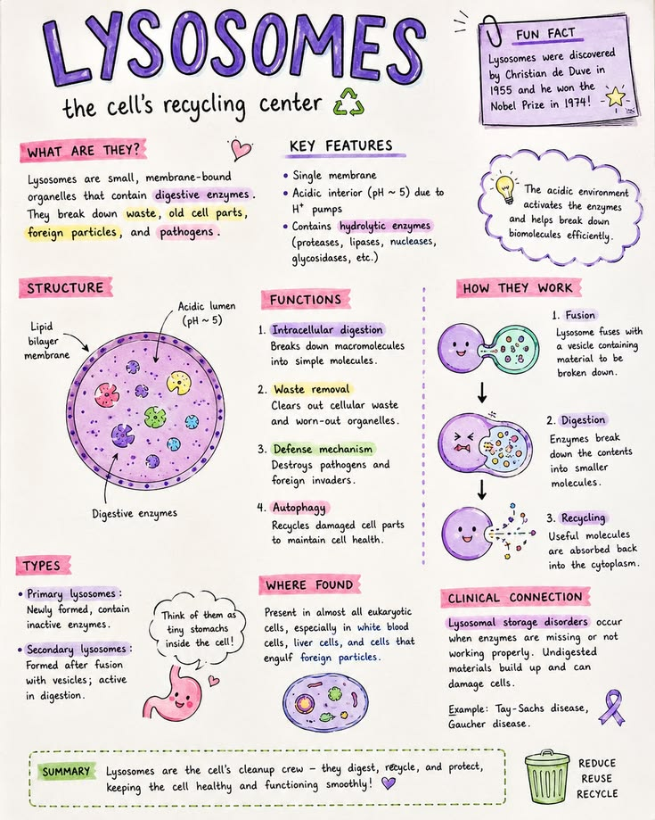

🧫 Lysosomes
The digestive organelles of the cell that break down waste materials and worn-out cell parts.
Introduction
Lysosomes are small, membrane-bound sacs filled with powerful digestive enzymes. They are formed by the Golgi Apparatus and are mainly found in animal cells. These enzymes help digest food particles, destroy harmful microorganisms and remove damaged cell organelles.
Because lysosomes contain enzymes capable of digesting almost all biological substances, they are often called the "suicide bags" of the cell. If a cell becomes old, damaged or severely injured, lysosomes may burst and release their enzymes, causing the cell to digest itself. This process is known as autolysis.
Lysosomes play an important role in keeping the cell clean by removing waste materials and recycling useful substances. This helps maintain the health and proper functioning of the cell.
Functions of Lysosomes
- Digest food particles inside the cell.
- Destroy bacteria and other harmful microorganisms.
- Break down worn-out cell organelles.
- Recycle useful materials for reuse.
- Help remove dead or damaged cells through autolysis.
📌 Key Points
- Lysosomes are membrane-bound sacs containing digestive enzymes.
- They are formed by the Golgi Apparatus.
- They digest food particles, bacteria and damaged cell organelles.
- They help recycle useful materials inside the cell.
- They are known as the "suicide bags" of the cell because they can digest the cell during autolysis.
📝 Remember
Lysosomes = Digestive Enzymes = Waste Removal + Recycling + Autolysis
🎯 JKBOSE Exam Point
The following questions are commonly asked in JKBOSE examinations:
- Define lysosomes.
- Why are lysosomes called the "suicide bags" of the cell?
- State any five functions of lysosomes.
- What is autolysis?
- Which cell organelle forms lysosomes?

Figure 1.10 — Lysosomes containing digestive enzymes inside an animal cell.
❓ Practice Questions
- What are lysosomes?
- Why are lysosomes called the "suicide bags" of the cell?
- Write any five functions of lysosomes.
- What is autolysis?
- Which organelle forms lysosomes?
- How do lysosomes help keep the cell healthy?